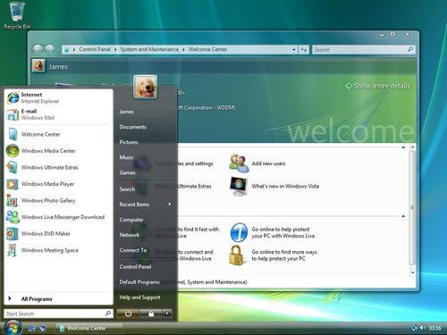
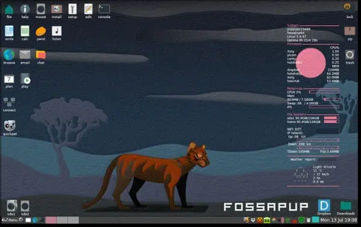
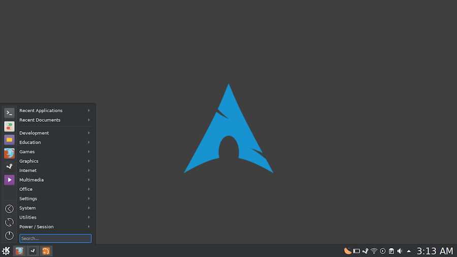

- software de sitema
- software de aplicação
- software de programação
- software de segurança
- software de bases de dados
- software de redes
- software educacional
- software de entreterimento
- software de gestã empresarial
- software de desing assistindo por computador (CAD)
o que é um software?
O software é um produto virtual, que consiste essencialmente em um conjunto de códigos – instruções escritas em determinada linguagem da computação. Quando o usuário vai utilizar um software, porém, ele não enxerga códigos.

software de sitema
Os softwares de sistema, por sua vez, são responsáveis por gerenciar o comportamento do hardware de um dispositivo, oferecendo as funcionalidades básicas exigidas pelos usuários e por outros programas. Sistemas operacionaisWindows, macOS, Linux, iOS e Android
software de aplicação
O tipo mais conhecido, os softwares de aplicação são os famosos programas, que são utilizados para realizar tarefas do cotidiano como ouvir música, vídeos, criar e editar planilhas e arquivos.
Microsoft Word, Spotify, Calculadora, Instagram, TikTok.

software de programação
Word, Exel, Paint, Bloco de notas, calculadora. SOFTWARE DE PROGRAMAÇÃO: são softwares usados para criar outros programas, a parir de uma linguagem de programação, como Java, PHP, Pascal, C+, C++, entre outras
Chrome, calculadora, Windows Media Player, Microsoft Word, AutoCAD, Adobe Photoshop.

software de segurança
O objetivo da segurança de software é produzir software que não seja vulnerável a modificação não autorizada, tampouco deve possibilitar a um usuário, mal intencionado ou não, ter acesso a dados, podendo difundir, alterar ou mesmo destruí-los.
Shodan,Kali Linux e DNS Dumpster

software de bases de dados
O software de banco de dados às vezes também é conhecido como "sistema de gerenciamento de banco de dados" (DBMS). O software de banco de dados simplifica o gerenciamento de dados, permitindo que os usuários armazenem dados em um formulário estruturado e depois os acessem.
incluem Oracle, Microsoft SQL Server, MySQL, PostgreSQL e MongoDB.
software de redes
Gerencie sua rede em um nível superior com o PRTG: Monitoramentos, análises, diagnósticos. O PRTG o notifica antes que surjam erros. Software tudo em um. Economize tempo e energia. Disponível hospedado
Chrome, calculadora, Windows Media Player, Microsoft Word, AutoCAD, Adobe Photoshop.
software educacional
Informações impressionantes. Pesquise e encontre agora. Respostas relevantes. Procure agora. Informação na Internet. Pesquisas relacionadas. Encontre Respostas. Pesquisas populares. Resultados de Pesquisa.
Plataformas de palestras,Aplicativos de desafios e questões e Softwares de ilustração
software de entreterimentoO novo sistema operacional da Microsoft, o Windows 8, foi lançado oficialmente na última sexta-feira (26) e as pessoas que já realizaram a atualização do software estão descobrindo os novos recursos e a interface do usuário diferenciada.
Chrome, calculadora, Windows Media Player, Microsoft Word, AutoCAD, Adobe Photoshop.
Windows 1.0 (1985)
A primeira versão do SO foi lançada no longínquo ano de 1985 e era mais uma extensão do MS-DOS do que um software completo. Ele se caracterizava pelo modelo colorido na tela e aplicações como bloco de notas e até um Paint. Ele não permitia a sobreposição de janelas, por exemplo, e por isso todas elas ficavam expostas lado a lado.

Windows 2.0 (1987)
O Windows 2.0 chegou ao mercado em dezembro de 1987 e, tanto como o seu predecessor quanto o seu sucessor, usava uma estrutura de computação em 16 bits. Ele apresentou melhorias na interface, como a possibilidade de sobrepor janelas de programas, atalhos de teclado e suporte a

Windows 3.0 (1990)
Sucessor do Windows 2.0, que trouxe poucas alterações em relação ao primeiro, o 3.0 foi lançado em 1990 com melhorias de memória. Ele também se destacou pelo visual mais limpo, melhor organização de arquivos e apresentou ao mundo o Campo Minado, que viria a ser um destaque nos computadores

Windows 95 (1995)
Considerado um dos sistemas operacionais mais importantes da história, o Windows 95 abriu uma nova era para a Microsoft. Ele foi programado em 32 bits e trouxe melhorias que incluíam o sistema plug and play, recursos de acessibilidade e o navegador

Windows 98 (1998)
O Windows 98 aprofundou a revolução que o seu antecessor começou. Disponibilizado em junho de 1998, ele era mais estável, tinha suporte a mais de um monitor e componentes USB, particionamento do HD, serviço Outlook de e-mail, modo de hibernação e mais. No mundo todo, ele foi o primeiro contato de muita gente com o PC, já que ainda estava em muitas máquinas mesmo após a virada do século.

Windows 2000 (2000)
O Windows 2000 foi lançado em fevereiro de 2000 e consolidou o fim definitivo da nomenclatura "NT". O Windows NT, que começou a ser disponibilizado em 1993, era voltado para usuários corporativos, servidores e workstation, e não para o público geral. Por causa disso, sua menção é importante, além de ter trazido recursos importantes e novos sistemas de segurança.

Windows XP (2001)
O Windows XP foi lançado em outubro de 2001 e à época era bastante inovador, principalmente no quesito visual. Ele apostou em um menu Iniciar verde e barras azuis que se tornaram bastante populares entre os usuários.

Windows Vista (2006)
O Windows Vista teve um hiato bastante grande em relação ao anterior, se desconsiderarmos as atualizações e novas versões do XP. Ele foi lançado em novembro de 2006, apresentando uma nova estética de janelas transparentes e melhores recursos de segurança.
Windows 7 (2009)
Lançado em julho de 2009, o Windows 7 foi recepcionado de maneira um pouco melhor na comparação com o Vista e melhorou tanto o esquema visual quanto o desempenho do sistema operacional. Ele também se destacou por apresentar recursos como suporte a telas touch screen e multi-touch, leitura de Blu-ray, Windows Defender, modo Windows XP e mais.

Windows 8 (2012)
Apesar de também não ter sido muito popular, o Windows 8 trouxe mudanças que podem ser vistas até hoje no software da Microsoft. Ele foi lançado em outubro de 2012 e remodelou por completo a interface do sistema operacional, trazendo um novo sistema de widgets, janelas retangulares e a remoção do clássico menu iniciar, que foi bastante polêmica.

Windows 10 (2015)
O software mais recente da Microsoft foi lançado em julho de 2015. Ele trouxe de volta o menu Iniciar e tem como um dos principais diferenciais o foco multimídia, que pode ser visto na integração com o Xbox, notebooks e tablets. Outra grande novidade que ele apresentou foi a assistente virtual Cortana.
Windows 11 (2021)
Nesta quinta-feira (24), a Microsoft apresentou o futuro do seu produto mais popular. Apesar de ter sido anunciado hoje, ele será lançado no final de 2021 e chegará em uma atualização gratuita para quem tiver a versão anterior.

Linux Mint
Linux Mint é uma distribuição Linux criada a partir de uma comunidade baseada no Ubuntu. É amada por pessoas usuárias casuais e profissionais na área da tecnologia. Mesmo abandonado o suporte a versão 20 do Snap, o Mint ainda é bem popular.

Linux Ubuntu
Desenvolvido por uma empresa chamada Canonical, o Ubuntu é baseado em um dos muitos derivados do Linux Debian. Esse software chegou ao mercado em 2004. As pessoas programadoras na época perceberam os destaques do sistema e sua facilidade na programação. A interface de linha de comando permitia que fosse usada uma sintaxe mínima para escrever programas. O Ubuntu tem três versões, todas desenvolvidas para diferentes propósitos.

Linux Deepin
Deepin é uma distribuição baseada em Debian (era baseada em Ubuntu até a versão 15 lançada no final de 2015) que tem como objetivo fornecer uma interface elegante, confiável e amigável.
Kali Linux
Offensive Security é a empresa responsável pelo Kali Linux. Ele por si só é uma distro Linux baseada em Debian. Foi projetado para ajudar principalmente profissionais da área de segurança com seus inúmeros testes.

Manjaro Linux
Os principais recursos incluem processo de instalação intuitivo, detecção automática de hardware, modelo de lançamento estável, capacidade de instalar vários kernels, scripts Bash especiais para gerenciamento de drivers gráficos e extensa configurabilidade de desktop.

Linux Debian
Debian é a distribuição mais antiga e mais popular do Linux. Como qualquer outro distro de peso, fornece uma ambientação muito agradável e rápida. Atualmente, sua última versão é a 11, que também é chamada de Bullseye.

Puppy Linux
Puppy Linux é mais uma distribuição Linux. A diferença aqui é que o Puppy é extraordinariamente pequeno, mas cheio de recursos. O Puppy inicializa em um ramdisk e, ao contrário das distribuições de live CD que tem que extrair coisas do CD, ele carrega na RAM. Isso significa que todos os aplicativos começam em um piscar de olhos e respondem à entrada instantaneamente.
Linux OpenSUSE
São dois ramos de desenvolvimento principais: SUSE Leap, que é a versão estável e que é voltada para as pessoas usuárias, como também para as pessoas desenvolvedoras. Tornando a escolha perfeita para quem quer ajudar no desenvolvimento de código aberto.

Linux Lite
O Linux Lite é voltado principalmente para pessoas usuárias ativas do Windows. O objetivo é fornecer um conjunto completo de aplicativos para auxiliá-las em suas necessidades diárias de computação, incluindo um pacote de escritório completo, reprodutores de mídia e outros softwares diários essenciais.

MX Linux
Utiliza o XFCE como a área de trabalho padrão (com edições separadas do KDE Plasma e Fluxbox também disponíveis), é um sistema operacional de peso médio projetado para combinar uma área de trabalho elegante e eficiente com configuração simples, alta estabilidade e desempenho sólido.

Linux CentOS
O Linux CentOS é mais um sistema operacional gratuito que tem como objetivo criar um ecossistema de código aberto confiável. Ele é baseado no RHEL, e é uma das alternativas do Red Hat Enterprise Linux por ser gratuito.

Arch Linux
Arch Linux é a distribuição que foi projetada para pessoas usuárias avançadas ou especialistas em Linux. Sendo possível configurar e personalizar o sistema da maneira que a pessoa usuária quiser. Podemos dizer também que o Arch é voltado para pessoas que gostam de ter controle sobre o seu sistema operacional.
Linux Zorin OS
Zorin OS é uma distribuição Linux baseada no Ubuntu projetada especialmente para iniciantes no Linux. Possui uma interface gráfica de usuário semelhante ao Windows e muitos programas semelhantes aos encontrados no Windows.

Linux Slackware
O lançamento oficial do Slackware Linux foi feito por Patrick Volkerding e é um sistema operacional Linux avançado. Foi projetado com o objetivo de ser um sistema fácil de usar e é principalmente estável.

Oracle Linux
Oracle Linux é uma distribuição Linux para a classe empresarial e é suportada pela Oracle que a constrói a partir dos pacotes do Red Hat Enterprise Linux (RHEL).

Elementary OS
Alguns de seus recursos mais interessantes incluem um ambiente de área de trabalho personalizado chamado Pantheon e muitos aplicativos personalizados, incluindo fotos, músicas, vídeos, calendário, terminal, arquivos e muito mais. Ele também vem com alguns aplicativos familiares como o navegador Epiphany e um fork do Geary Mail.
 1
1